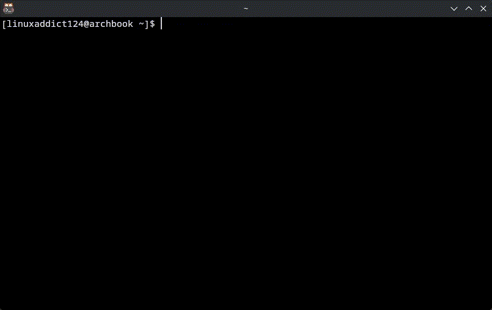

If your looking for information about the latest version of PyFetch, click here.
About PyFetch
PyFetch is a Python-based Neofetch alternative that shows system information. Not to be confused with the other PyFetch project which allows HTTP requests.
Features
- Blazing Fast
- Your Linux Distro name in ASCII Art (Or what we call it, Banners.)
- Editable config file
- Plugin support
Installation
For PyFetch AUR (v1.0.1):yay -S pyfetchPreview
____ _____ _ _
| _ \ _ _| ___|__| |_ ___| |__
| |_) | | | | |_ / _ \ __/ __| '_ \
| __/| |_| | _| __/ || (__| | | |
|_| \__, |_| \___|\__\___|_| |_|
|___/
Distro: Distro Name Here
Hostname: linux
User: linuxaddict124
Kernel: Linux 6.17.2
Packages: UNKNOWN
PyFetch Version: 1.1.0
CPU: x86_64
RAM: UNKNOWNUsage
Run pyfetch in your terminal to display system information. Edit ~/.config/pyfetch/pyfetch.conf to configure PyFetch.
GitHub
Check out the project on GitHub
Discord
There is a discord server for the PyFetch Community but the only thing there will be on it is announcements. Join now!